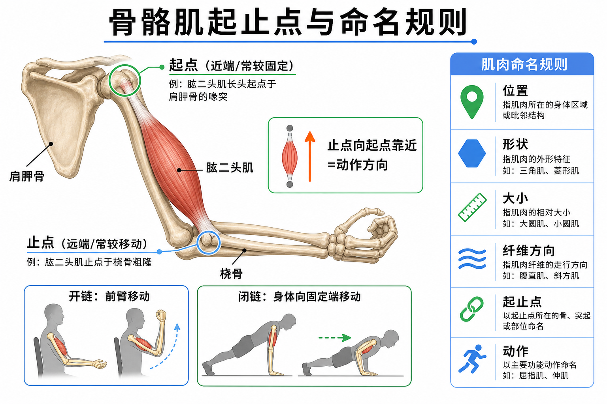

Day 10 · 骨骼肌起止点与命名规则
一句话总结
骨骼肌像一根跨过关节的可收缩绳索: 止点向起点靠近，就是它最容易造成的动作方向。名字则像线索卡，常把位置、形状、大小、方向、起止点或动作直接写进肌肉名称。

核心要点
-
起点 origin: 通常是近端、较固定的附着点，像绳子较稳的一端。
字面意思
origin = 起点，指肌肉收缩时相对更固定、较少移动的骨骼附着端。多数教材把近身体中线或近躯干的一端当起点，例如许多上肢肌肉起点在肩胛骨、锁骨或肱骨近端。
大白话把肌肉想成一根会缩短的弹力绳。起点像门框上的固定挂钩，绳子收缩时，另一端更容易被拉过来。
考试抓法题目问“某肌起点在哪里”时，不要先猜动作，先找近端骨和骨性标志。Day 2 学过骨性标志，就是为了今天能读懂起止点。
-
止点 insertion: 通常是远端、较移动的附着点，靠近起点时产生动作。
字面意思
insertion = 止点，指肌肉收缩时相对更容易移动的骨骼附着端。多数情况下止点在远端骨上，例如肱二头肌止点在桡骨粗隆附近。
大白话止点像绳子另一端挂着的物体。绳子一缩短，物体被拉向固定挂钩，所以“止点向起点靠近”是最直接的动作判断。
真实例子肱二头肌收缩时，前臂上的止点靠近肩部起点，肘关节就屈曲。你做弯举时，上臂前侧变硬，就是肱二头肌在把前臂拉上来。
-
动作反推: 先画起点和止点，再问哪块骨会被拉向哪块骨。
步骤真实例子
1. 找跨过哪个关节
关节肌肉跨过肘，就可能影响肘；跨过肩，就可能影响肩。
2. 找止点移动方向
方向止点向起点靠近，骨头会沿这个方向运动。
3. 对照动作面
分类结合 Day 5，判断是屈伸、外展内收、旋转还是水平动作。
胸大肌从胸骨、锁骨附近到肱骨近端。肱骨被拉向胸前，所以它常参与肩水平内收、肩内旋和肩屈曲。
常见误解❌只背“某肌做某动作”。✅更稳做法是看它跨哪关节、附着在哪、拉线朝哪走。这样遇到陌生肌肉也能推。
-
开链动作: 远端自由移动，常按“止点向起点靠近”正常分析。
字面意思
开链 = distal segment free，远端肢体没有固定在地面或器械上。手脚能自由移动，所以远端止点通常更明显移动。
大白话弯举时手拿哑铃但前臂能动，身体没有被前臂拉过去。此时肱二头肌把前臂拉向肩部，很符合止点移动规则。
训练含义腿屈伸、腿弯举、弯举、侧平举多是开链。开链更容易孤立目标肌，也更容易观察单个关节动作。
-
闭链动作: 远端固定时，起点和身体可能向止点移动，需要反向分析。
字面意思
闭链 = distal segment fixed，远端肢体固定在地面、单杠或稳定器械上。此时远端不动，近端身体反而移动。
大白话引体向上时手固定在单杠，背阔肌不是把手拉向身体，而是把身体拉向手。俯卧撑时手固定，肘伸肌让身体远离地面。
考试与训练同一块肌肉在开链和闭链里动作描述会变，但肌肉拉力方向没变。变化的是哪一端被固定、哪一端被允许移动。
-
肌肉命名规则: 名字常透露位置、形状、大小、纤维方向、起止点或动作。
对照表
训练含义命名线索 意思 例子 位置 肌肉所在区域或邻近结构 胸大肌、胫骨前肌 形状 外形像什么 三角肌、菱形肌 大小 相对大、小、长、短 臀大肌、胸小肌 纤维方向 纤维走向 腹直肌、腹外斜肌 起止点 连接哪两块骨或骨性标志 肱桡肌、胸锁乳突肌 动作 主要功能动作 旋前圆肌、拇长伸肌 名字不是死背负担，而是快速定位工具。看到“肱桡肌”，就知道它连接肱骨与桡骨；看到“伸肌”，就先想到伸展动作。
-
具体肌肉例子: 肱二头肌、胸大肌、三角肌、肱桡肌各自展示不同命名逻辑。
肱二头肌
“二头”提示它有两个头。它起于肩胛骨相关结构，止于桡骨粗隆和前臂筋膜，主要做屈肘、前臂旋后，也辅助肩屈。弯举时摸上臂前侧，像一条隆起的绳索。
胸大肌“胸”是位置，“大”是大小。它从锁骨、胸骨、肋软骨区域到肱骨，主要做肩水平内收、内旋和屈曲。卧推、俯卧撑时胸前发硬，就是它在参与推。
三角肌与肱桡肌三角肌按形状命名，像肩外侧三角形肩帽，前中后束分别偏肩屈、外展、肩伸。肱桡肌按起止点命名，连接肱骨和桡骨，常在中立握弯举时更容易感到前臂外侧发力。
-
闭链反推案例: 引体向上和俯卧撑证明“固定端改变，分析顺序也要变”。
引体向上
背阔肌从躯干和骨盆相关区域连到肱骨。开链下它让手臂向身体后下方走；闭链下手固定在单杠，身体被拉向上方，表现为肩伸、肩内收和肩胛控制协同。
俯卧撑手固定在地面，肱三头肌让肘伸，胸大肌和三角肌前束帮助身体远离地面。看似地面不动，其实是身体相对手的位置改变。
常见误解别把“起点永远不动”当铁律。起点/止点是教学约定，训练分析要看哪一端被外界固定。
常见误区
❌很多人以为起点一定永远不动。✅其实起点只是通常较固定；闭链动作里近端身体也可能向远端移动。
❌很多人看到肌肉名字只背中文。✅名字常带定位线索，例如“肱桡肌”直接告诉你它连接肱骨与桡骨。
❌很多人只背主动肌，不看关节和附着点。✅考试和动作分析更看你能否从结构反推动作。
记忆口诀
近端多起点，远端多止点；止向起靠近，动作就出现；手脚若固定，身体反着迁；名字藏线索，位置形大线，起止动作全。
翻转卡复习
实操关联
- 增肌: 根据起止点判断目标肌拉线，让动作轨迹更贴近目标肌功能，例如飞鸟强调胸大肌让肱骨向胸前靠近。
- 力量: 闭链动作要反向分析。深蹲、俯卧撑、引体向上里，身体移动方向常比远端肢体更关键。
- 康复: 疼痛点不等于问题肌。先看疼痛关节附近哪些肌肉跨过它，再看起止点和动作是否可能造成压力。
- 教学: 给客户讲动作时，用“这块肌肉把这块骨头拉向那块骨头”比单说术语更好懂。
- 考试: 遇到陌生肌肉名，先拆命名线索，再结合起止点和关节动作推答案。